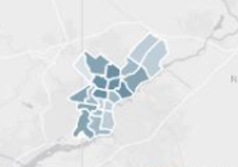

import pandas as pd
import matplotlib.pyplot as plt
import numpy as np
import geopandas as gpd
import warnings
warnings.simplefilter('ignore')COMM3180 Spring 2026 - Stories from Data
Instructor: Matt O’Donnell (mbod@asc.upenn.edu)
Shooting victims in Philadelphia

Exploring the dataset
Data is available from opendataphily.org
- https://www.opendataphilly.org/dataset/shooting-victims
- https://www.opendataphilly.org/dataset/shooting-victims
CSV version downloaded 03/16/26
data/shootings.csv
Related Data
- Philadelphia Police Districts
- https://www.opendataphilly.org/dataset/police-districts
- Philadelphia Police Districts
- Related articles
- https://www.theguardian.com/us-news/2021/sep/27/us-murder-rate-increase-2020
- https://6abc.com/philadelphia-murder-homicides-gun-violence-shooting/11050068/
Setup
1. Load the data into a data frame
shoot_df = pd.read_csv('data/shootings.csv') 2. Investigate the size of the data and eyeball some rows
- Key questions
- What does each row in the dataset represent?
- Which columns central to exploring stories in these data?
- What kinds of questions are possible given the data available (e.g. if age/race/ethnicity/other demographic information is available)?
shoot_df.shapeshoot_df.columnsSome of these columns are not mention in the metadata entry that lists 20 columns
Looks like there could be duplication (e.g.
point_xandlng,point_yandlatetc) and extra fields added for a specific dashboard/application use.
shoot_df.head()looks like each row is a shooting incident
looks like geo location duplicate across four columns
lng=point_xlat=point_y
question: do more shootings occur inside or outside?
who do demographic columns refer to:
- e.g. age, sex, race - offender or victim?
What are
the_geomandthe_geom_webmercatorcolumns?Do we need them?
shoot_df['the_geom_webmercator']shoot_df['the_geom'].head(10)Looks like some encoded information for a specific application (probably related to geodata)
We will ignore for now
3. Look at columns and kinds and range of data captured in dataset
shoot_df.columns- what is
dist? - distance? from what? - probably district- checking the metadata confirms that it is POLICE DISTRICT
# how many values in the dist column?
shoot_df['dist'].nunique()# what are the distinct values?
shoot_df['dist'].unique()# how are they distributed?
shoot_df['dist'].value_counts()- We will come back and look at the file
data/Boundaries_District.csvin more detail. But if we load it and take a quick look:
districts_df = pd.read_csv('data/Boundaries_District.csv')districts_df.shapedistricts_df.head()districts_df['DIST_NUM'].nunique()districts_df['DIST_NUM'].unique()- Seems like the
distvalues in theshoot_dfand those in thedistricts_dfalign (although one more?)
Returning to columns in shoot_df
- The
racecolumn
shoot_df['race'].value_counts()- Values:
- B = black
- W = white
- A = Asian(?)
- U=?unknown/unidentified
- I = indigenous?
- Checking the entry from the metadata field table
| Field Name | Alias | Description | Type |
|---|---|---|---|
| RACE | Race | The race of the individual shot (Asian, Black, White, American Indian, Other) | Text |
NOTE: We should map these single letter abbreviations to readable labels
Probably doesn’t help us understand the distribution beyond what we see from using
.value_counts()but we could do some quick visualization
shoot_df['race'].value_counts().plot(kind='bar')
plt.show()WARNING DON’T DO THIS!!!!
- For illustration purposes of how horrible a pie chart is for understanding data take a look at this
shoot_df['race'].value_counts().plot(kind='pie')
plt.show()pandaswill let you create a pie-chart… but it is strongly discouraged as most data visualization sources will tell you how poorly they communicate proportions. Best to use a bar chart. Enough said!The
yearcolumn
shoot_df['year'].value_counts()The
date_columnLooking at a random sample of 20 rows:
shoot_df['date_'].sample(20)date_has aYYYY-MM-DDformatThe
agecolumnLooks numeric for years old, so can use `.describe() to look at min, max, mean etc.
shoot_df['age'].describe()- We could also use
.value_counts()as it is a fixed set (0-117 years old)
shoot_df['age'].value_counts()- And perhaps use a plot of this distribution
shoot_df['age'].value_counts().plot(kind='bar', figsize=(16,4))
plt.show()20-25 year olds most frequent
But this is not that helpful to observe patterns.
Below we will use a histogram instead
4. Identify the dimensions that could be used for grouping and summarizing
- Look at the types of values in the columns:
- categorical - groups, kinds, outcomes, etc.
sexrace- ?latino col is separate- type of shooting
fatallocation- inside or not
- officer involved
- wound type
- date
yeardate_y-m-d
- location
- geolocation columns (
point_x,lngetc) dist- polic district
- geolocation columns (
- continuous counts, measurements
age- but need to add grouping
- categorical - groups, kinds, outcomes, etc.
5. Summarize key columns
Use Pandas functions like
.value_counts()and.describe()and.count()to look at the distribution of valuesFor continuous values you can use
.plot()and.hist()Also try
.plot(kind=bar)on the result of counting values.
shoot_df['age'].plot(kind='hist', bins=50)
plt.show()shoot_df['age'].plot(kind='density')
plt.show()shoot_df['age'].mean()shoot_df['age'].median()shoot_df['age'].describe()shoot_df['race'].value_counts().plot(kind='bar')
plt.show()shoot_df['inside'].value_counts()shoot_df['outside'].value_counts()race_mapping = {
'B': 'BLACK',
'W': 'WHITE',
'A': 'ASIAN',
'I': 'INDIGENOUS',
'U': 'UNIDENTIFIED/OTHER'
}Remapping values with .map() function
shoot_df['race'].map(race_mapping).head(10)race_mapping['B']shoot_df['race'].head(10)shoot_df['race_long']=shoot_df['race'].map(race_mapping)shoot_df.shapeshoot_df[['race','race_long']]shoot_df['latino'].value_counts()latino_mapping = {
0 : 'NON-LATINO',
1 : 'LATINO'
}shoot_df['latino_long']=shoot_df['latino'].map(latino_mapping)shoot_df.shapeshoot_df['ethnicity']=shoot_df['race_long'] + ' ' + shoot_df['latino_long']shoot_df['ethnicity'].head(20)shoot_df['ethnicity'].value_counts().plot(kind='bar')
plt.show()shoot_df.groupby(['race_long', 'latino_long']).size().unstack().plot(kind='bar', stacked=False)
plt.show()shoot_df.groupby(['race_long', 'latino_long']).size()shoot_df.count()- not much missing data - come back and check for how missing values are recorded
shoot_df.groupby('sex')['race_long'].value_counts()shoot_df[['inside','outside']].corr()shoot_df.groupby('year')['fatal'].value_counts(normalize=True)bins=[0,9,19,29,39,49,59,69,79,100]
labels=["0-9", "10-19", "20-29", "30-39", "40-49", "50-59", "60-69","70-79", "80+"]shoot_df['age_group']=pd.cut(shoot_df['age'], bins=bins, labels=labels)shoot_df[['age', 'age_group']]shoot_df['age_group'].value_counts()shoot_df[shoot_df['age_group']=='80+']shoot_df['age'].hist(grid=False)
plt.show()shoot_df['wound'].unique()shoot_df[shoot_df['fatal']==1].groupby(['dist','wound']).size()shoot_df['code'].value_counts()# Looking at the metadata and UCS codes for classifying crimes
print(
'''
0000: Additional Victim
0100 – 0119: Homicide
0200 – 0299: Rape
0300 – 0399: Robbery
0400 – 0499: Aggravated Assault
3000 – 3900: Hospital Cases
''')
# could create a mapping to go from number to labeldef code2type(code):
if code<120:
incident='Homicide'
elif code<300:
incident='Rape'
elif code<400:
incident='Robbery'
elif code<500:
incident='Aggravated Assault'
elif code>=3000 and code<4000:
incident='Hospital Cases'
else:
incident=None
return incidentshoot_df['code'].map(code2type)shoot_df['code_long'] = shoot_df['code'].map(code2type)shoot_df['fatal_long']=shoot_df['fatal'].map({0: 'NON-FATAL', 1: 'FATAL'})
shoot_df['outside_long']=shoot_df['outside'].map({0: 'INSIDE', 1: 'OUTSIDE'})shoot_df['date_YM']=shoot_df['date_'].str[:7]shoot_df.groupby('date_YM').size().plot(figsize=(16,4))
plt.show()shoot_YM_race = shoot_df.groupby(['date_YM','race_long']).size().unstack().fillna(0)
shoot_YM_race.plot(kind='line',figsize=(16,4), stacked=False)
plt.show()shoot_df.groupby('date_YM').size().plot(figsize=(16,4), kind='bar')
plt.show()shoot_YM_fatal=shoot_df.groupby(['date_YM','fatal_long']).size().unstack()
shoot_YM_fatal.plot(figsize=(16,4), kind='bar', stacked=True)
plt.show()Looking at Polic Districts
shoot_by_dist=shoot_df['dist'].value_counts()ppd_dist_gdf = gpd.read_file('data/Boundaries_District.geojson')ppd_dist_gdf.head()ppd_dist_gdf['centX']=ppd_dist_gdf.centroid.x
ppd_dist_gdf['centY']=ppd_dist_gdf.centroid.yppd_dist_gdf.plot(color='white', edgecolor='gray', figsize=(10,10))
ppd_dist_gdf.apply(lambda r: plt.text(r['centX'], r['centY'], r['DIST_NUM']),axis=1)
plt.show()ppd_dist_counts_gdf = ppd_dist_gdf.merge(shoot_by_dist, left_on='DIST_NUM', right_index=True) ppd_dist_counts_gdfppd_dist_counts_gdf.plot(edgecolor='gray', column='count', figsize=(10,10),
legend=True, cmap='Oranges')
ppd_dist_counts_gdf.apply(lambda r: plt.text(r['centX'], r['centY'], r['DIST_NUM']),axis=1)
plt.show()